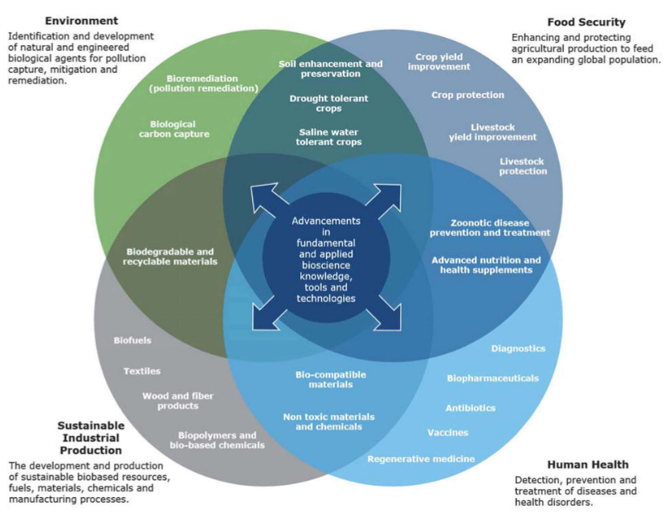
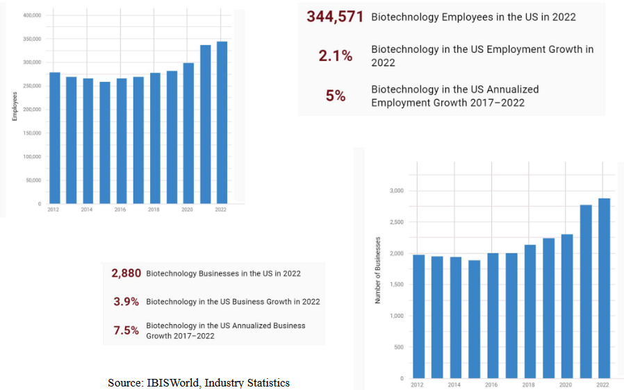

1 Introduction to Biobusiness
Biotechnology, or bio-business, involves using living organisms or biological systems to create or improve products and processes for specific purposes. It has different types, each focusing on specific applications.
Firstly, there’s Blue Biotechnology, which is all about using marine and aquatic resources for various purposes. This could include things like finding new medicines or improving the way we harvest seafood.
Then, there’s Green Biotechnology, also known as Plant Biotechnology, which is applied to agricultural processes. This means using biological methods to enhance crop growth, develop pest-resistant plants, or improve farming techniques.
Next, there’s Red Biotechnology, which is all about applying biological processes to the field of medicine. This can involve creating new medicines, developing medical treatments, or finding innovative ways to improve healthcare.
Lastly, there’s White Biotechnology, which is focused on industrial processes. This type of biotechnology looks for ways to use biological systems to make industries more efficient, sustainable, and environmentally friendly.
Bioentrepreneurship covers a wide spectrum of activities that involve using biological and life sciences to create businesses. Let’s break it down into different categories:
- BioMedical:
- Healthcare: Creating businesses related to healthcare services.
- Pharmaceuticals: Developing and producing medications.
- Biomedical Biotechnology: Applying biological techniques to medical processes.
- Herbal and Traditional Medicine: Utilizing natural and traditional healing methods.
- Medical Devices: Innovating and producing medical equipment.
- Diagnostics: Creating tools and technologies for medical diagnosis.
- Agri-veterinary:
- Agriculture: Developing businesses related to farming and cultivation.
- Fisheries and Aquaculture: Engaging in activities related to fishing and aquatic farming.
- Animal Husbandry: Managing and breeding animals for various purposes.
- Forestry and Lumber: Business activities related to wood and forest products.
- Agri-biotechnology: Applying biotechnology to improve agricultural processes.
- Recreational Animal Industry: Involves pets, racehorses, and similar recreational animals.
- Horticulture: Cultivating and selling fruits, vegetables, and ornamental plants.
- Food-related:
- Food Processing: Engaging in the production and processing of food items.
- Food Biotechnology: Using biotechnology to enhance food production and quality.
- Food Services: Providing services related to the preparation and distribution of food.
- Environmental & Industrial:
- Management of Biodiversity: Businesses focused on preserving and managing diverse ecosystems.
- Environmental Bioremediation: Developing solutions to clean and restore polluted environments.
- Waste Management: Creating businesses to handle and dispose of waste.
- Environmental Biotechnology: Using biotechnology for environmental conservation.
- Marine Biotechnology: Applying biological techniques to marine-related industries.
- Industrial Biotechnology: Using biological processes in various industrial applications.
- Other Activities:
- Bio-IT: Applying information and communication technology in life sciences.
- Bioengineering: Developing businesses related to the application of engineering principles in biology.
- Nanotechnologies: Applying nanotechnology in life sciences and biotechnology.
- Life Science and Biotechnology Education: Providing education in life sciences and biotechnology.
- Research & Development: Engaging in research and development activities in life sciences and biotech.
- Contract Services: Offering services like contract research and manufacturing to support R&D activities.
1.1 State of Biobusiness Today
The biotechnology industry today is a dynamic field encompassing various sectors such as therapeutics, diagnostics, tools and technology, agriculture, biofuels, and renewable chemicals. With over 10,000 companies globally, this industry plays a significant role in the economy by providing employment to more than 500,000 people worldwide.

As of 2021, the global biotechnology market is valued at USD 1,023 million. It is expected to experience a robust growth trajectory, with a Compound Annual Growth Rate (CAGR) of 13%. Projections estimate that by 2030, the market will reach an impressive USD 3,879 million, reflecting the industry’s potential for expansion.
Biotechnology has established itself in various clusters worldwide, fostering innovation and collaboration. Notable clusters include: - United States: Concentrated in areas like Boston/Cambridge, the San Francisco Bay Area, and other regions. - United Kingdom: Prominent in cities such as London and Oxford. - Australia: Growing clusters in Sydney and Melbourne. - Asia: Significant presence in Japan, China, and Singapore.
Interestingly, the biotechnology sector has shown resilience and continued growth, even during challenging economic times faced by other industries. This resilience underscores the industry’s importance and its ability to adapt and thrive in changing environments. As it continues to evolve, the biotechnology industry is likely to contribute significantly to advancements in healthcare, agriculture, and environmental sustainability.
1.2 Case Study: Moderna
The story of Moderna is a tale of persistence, innovation, and a groundbreaking leap into the field of biotechnology. Founded in 2010 in Boston, Moderna’s journey began with a crucial discovery that nucleoside modifications could alter the immunogenicity of RNA, setting the stage for the development of a revolutionary approach to medicine.
In its initial two years, Moderna demonstrated its potential by securing over $40 million in funding. The turning point came in 2013 when AstraZeneca, a major pharmaceutical player, recognized Moderna’s promise and entered an exclusive agreement. AstraZeneca paid a substantial upfront amount of $240 million for the exclusive option to collaborate with Moderna in discovering, developing, and commercializing mRNA drugs for specific diseases.
Despite not having a commercial product and accumulating losses amounting to $1.5 billion by the end of 2019, Moderna took a bold step in 2018 by going public. The initial public offering (IPO) was a remarkable success, raising a record-breaking $621 million, a testament to investors’ confidence in the company’s potential.
The pivotal moment for Moderna arrived with the onset of the COVID-19 pandemic. In response to the global crisis, Moderna engaged in the Operation Warp Speed project, an initiative to expedite the development of a COVID-19 vaccine. The clinical trial for Moderna’s COVID-19 vaccine commenced in March 2020. The company achieved a significant milestone when the U.S. Food and Drug Administration (FDA) issued emergency use authorization for the vaccine on December 18, 2020.
1.2.1 Lessons from Moderna’s Story
The Moderna story offers several valuable lessons:
- Refuse to Quit - Persistence Pays Off:
- Moderna’s story highlights the importance of persistence in the face of challenges. Despite facing dead ends in the early stages, the company persisted in its pursuit of a promising scientific idea.
- Technology Breakthrough is Key:
- The success of Moderna is attributed to a significant technological breakthrough. Developing modifications to stabilize synthetic mRNA and reduce side effects was crucial in creating an effective product.
- Storytelling for Investors:
- Moderna excelled in selling its story to investors. Clearly communicating the potential of its technology and garnering support played a vital role in securing funding, even when the company had no commercial product.
- Good Science and Investment Don’t Guarantee Immediate Success:
- The Moderna story illustrates that having both sound scientific foundations and significant investment does not necessarily translate into immediate commercial success. The journey from research to a viable product can be challenging and time-consuming.
- Adaptability - Ready to Change Course:
- Moderna’s readiness to adapt is evident in its shift from focusing on traditional drugs to embracing the opportunity in vaccine development, particularly during the COVID-19 pandemic. Being open to change and seizing new opportunities is crucial for success.
- Timing is Crucial - Grabbing the Right Opportunity:
- The Moderna story underscores the importance of timing. The company’s involvement in the Operation Warp Speed project for a COVID-19 vaccine showcased the significance of seizing the right opportunity at the right moment.
1.3 Bio-Entrepreneurs
Bio-entrepreneurs are individuals who venture into the field of biotechnology with a focus on creating innovative products or services that contribute to the betterment of the world. Here are some common characteristics shared by bio-entrepreneurs:
- Idealism and Altruism:
- Many bio-entrepreneurs start their journey with a sense of idealism and altruism. Their motivations often stem from a genuine concern for the well-being of the world and its people.
- Belief in Impactful Solutions:
- Bio-entrepreneurs share a common belief that their product or service has the potential to significantly improve the lives of millions of people. Whether it’s through better diagnostics, treatment, cures, or advancements in agriculture and energy, they are driven by a desire to make a positive impact.
- Not Primarily Driven by Personal Financial Gain:
- While financial success is a consideration, bio-entrepreneurs are typically not principally driven by personal financial gain. Their primary focus is on the societal and global impact of their innovations.
- Technical Knowledge in a Specific Discipline:
- Founders of bio-entrepreneurial ventures usually possess technical knowledge in a specific discipline. This might include scientists, physicians, engineers, or individuals with expertise in a particular field related to biotechnology. This technical background is crucial in developing and understanding the innovations they bring to the market.
- Focus on Diagnosis, Treatment, Cure, Food, or Fuel:
- Bio-entrepreneurs are often involved in creating solutions related to diagnosis, treatment, cures for diseases, advancements in agriculture (feeding), or innovations in sustainable energy sources (fuel).
1.3.1 What is Unique About Bio-Entrepreneurs?
The integration of science and business is a unique challenge for bio-entrepreneurs, as they play dual roles in managing both the risks associated with running a business and the uncertainties inherent in scientific endeavors. This intersection requires a delicate balance between the two disciplines. Here are some considerations:
- Management of Business Risks:
- Bio-entrepreneurs need to navigate typical business risks such as market fluctuations, competition, regulatory challenges, and financial uncertainties. Developing robust business plans, market analyses, and strategic approaches are essential in mitigating these risks.
- Management of Scientific Risks:
- Scientific risks are integral to biotechnology ventures. Bio-entrepreneurs must address uncertainties in research and development, potential setbacks in experimental outcomes, and unforeseen scientific challenges. This involves creating adaptive research plans and staying updated on scientific advancements.
- Interconnected Nature of Scientific and Business Issues:
- The success of a biotechnology venture is intricately tied to both scientific and business aspects. Scientific advancements may impact market positioning, and conversely, market demands may influence the direction of scientific research. This interconnectedness requires a holistic approach to decision-making.
- Example: Biofuel Plant Farming:
- In the context of biofuel plant farming, bio-entrepreneurs face unique challenges. Conducting field trials in the target market is crucial for both sales and attracting investment. However, the outcomes of these trials are not always predictable, and unexpected variables, such as climate and disease profiles, may arise.
- Balancing Innovation and Investment:
- Bio-entrepreneurs must balance the need for innovation with the imperative for securing investment. The introduction of new research to address unique challenges, such as adapting to specific climates or combating novel diseases, may be necessary. However, these efforts can potentially delay investment, requiring careful strategic planning.
- Adaptability and Flexibility:
- Given the uncertainties in both scientific and business domains, adaptability and flexibility are key attributes for bio-entrepreneurs. Being able to pivot strategies based on scientific developments and market feedback is crucial for long-term success.
1.3.2 Challenges Faced by Bio-Entrepreneurs
Bio-entrepreneurship indeed presents additional challenges compared to general entrepreneurship due to the unique nature of the biotechnology industry. Here are some specific challenges faced by bio-entrepreneurs:
- High Capital Requirements:
- Biotechnology ventures often require substantial financial investments. The costs associated with research and development, laboratory equipment, clinical trials, and regulatory compliance can be significantly higher compared to other industries. Securing funding for these capital-intensive activities is a persistent challenge for bio-entrepreneurs.
- Extended Development Timelines:
- The development timeline for biotechnological products, including drugs or advanced agricultural technologies, tends to be longer. Research, pre-clinical testing, clinical trials, and regulatory approvals can extend over many years. Bio-entrepreneurs need to navigate and sustain their ventures through extended periods without immediate commercial returns.
- Stringent Regulatory Approval Requirements:
- Regulatory approval is a critical step for bio-entrepreneurs to bring their products to market. The biotechnology industry faces strict regulatory requirements, particularly in areas like pharmaceuticals and medical devices. Meeting these standards is time-consuming, costly, and involves rigorous testing and documentation.
- Scientific Uncertainty:
- Inherent scientific uncertainty is a fundamental challenge in biotechnology. Experimentation and research outcomes are not always predictable, and unexpected scientific challenges may arise during the development process. Bio-entrepreneurs must be prepared to adapt their strategies in response to scientific uncertainties.
- Ethical and Social Considerations:
- Biotechnological advancements often raise ethical and social considerations. Bio-entrepreneurs must navigate public perception, ethical debates, and potential controversies surrounding their products, especially in fields such as genetic engineering and personalized medicine.
- Market Adoption and Education:
- Introducing innovative biotechnological products to the market requires educating not only consumers but also healthcare professionals, farmers, or other stakeholders. Convincing users of the efficacy, safety, and benefits of new biotech solutions can be a significant challenge.
- Global Collaboration and Partnerships:
- Biotechnology often involves cutting-edge research that benefits from global collaboration. Bio-entrepreneurs may face challenges in establishing and managing international partnerships, dealing with diverse regulatory landscapes, and navigating cross-border collaborations.
- Environmental and Sustainability Concerns:
- Biotechnological advancements may raise environmental and sustainability concerns. Bio-entrepreneurs need to address these issues proactively, ensuring that their products align with evolving environmental regulations and societal expectations.
1.3.3 Driving Characteristics
Embarking on biotech entrepreneurship demands a unique set of qualities that go beyond general entrepreneurial characteristics. Here are essential qualities for success in the biotechnology sector:
- A Driving Passion:
- Biotech entrepreneurs need a deep passion for the field and a genuine commitment to making a positive impact on society through scientific innovations. This passion serves as a driving force during the challenges inherent in the biotechnology landscape.
- Ability to Communicate and Desire to Learn:
- Effective communication is crucial for conveying complex scientific concepts to various stakeholders, from investors to the general public. A constant desire to learn is essential due to the rapidly evolving nature of biotechnology.
- Ability to Inspire Others and Stay Optimistic:
- Biotech entrepreneurs often lead teams of scientists, researchers, and business professionals. The ability to inspire and maintain optimism, even in the face of setbacks, fosters a resilient and motivated team.
- Unafraid of Taking Calculated Risks:
- The biotechnology sector involves inherent uncertainties and risks. Entrepreneurs must be willing to take calculated risks, informed by a combination of scientific knowledge and strategic thinking.
- Perseverance in Adversity:
- Biotech entrepreneurship involves overcoming scientific, regulatory, and financial challenges. Perseverance in the face of adversity is crucial for navigating the lengthy and uncertain development processes.
- Ability to Raise Money and Manage Finance:
- Securing funding is a constant challenge in biotech entrepreneurship. Entrepreneurs must be adept at raising capital through various channels and possess financial acumen to manage resources efficiently.
- Awareness of the Unknown-Unknowns:
- In biotechnology, the unknown-unknowns, unforeseen challenges that may arise, are common. Entrepreneurs must possess an awareness of these uncertainties, adaptability to unexpected situations, and the ability to devise solutions on the fly.
- Be a Multi-Disciplined Translator:
- Biotech entrepreneurs often bridge the gap between scientific disciplines and business. The ability to translate complex scientific concepts into practical business strategies and vice versa is crucial for effective communication and decision-making.
1.3.4 Awareness of the Unknown Unknowns
“Awareness of the Unknown-Unknowns” is a critical aspect of navigating uncertainties in biotech entrepreneurship. This concept distinguishes between “known unknowns” (deficits in knowledge or expertise that can be addressed through learning and seeking advice) and “unknown unknowns” (things that entrepreneurs are not aware they don’t know). Here are examples and approaches to address this issue:
- Known Unknowns:
- These are aspects where there is a recognized deficit in knowledge or expertise. Entrepreneurs can address known unknowns by:
- Learning: Actively seeking knowledge through research, education, and staying informed about the latest developments in the field.
- Seeking Expert Advice: Consulting with experts in the relevant field to gain insights and guidance.
- Proceeding with Caution: Taking a careful and informed approach when dealing with areas of known uncertainty.
- These are aspects where there is a recognized deficit in knowledge or expertise. Entrepreneurs can address known unknowns by:
- Unknown Unknowns Examples:
- Unforeseen challenges fall into the category of unknown unknowns. For instance:
- “Flavr Savr” GM Tomato: Despite being the first approved genetically modified vegetable (1994) with delayed ripening, it faced unexpected customer resistance due to high prices and safety concerns. Production ceased in 1997.
- Influenza Nasal Vaccine by Aviron: The use of a new commercial production process different from the phase 3 trial production led to delays in FDA approval.
- Unforeseen challenges fall into the category of unknown unknowns. For instance:
- Approaches to Address the Issue:
- Seek Counsel and Advice:
- Always consult with experienced individuals in the field before embarking on a new venture or making critical decisions. Their insights can help uncover potential unknown unknowns and provide valuable perspectives.
- Clear Differentiation Between “The Goal” and “A Method”:
- Clearly define the overarching goal of the venture separate from specific methods or strategies. This allows for flexibility in adapting to unforeseen challenges while keeping the ultimate objective in focus.
- Continuous Learning and Adaptability:
- Foster a culture of continuous learning and adaptability within the entrepreneurial team. Encourage open communication and a willingness to reassess strategies based on new information.
- Seek Counsel and Advice:
1.4 Biological Uncertainty
Biological uncertainty factors in biotech entrepreneurship refer to uncertainties that become apparent only during the development and testing stages of a product. These uncertainties may not be fully known or anticipated until the product undergoes various testing phases. Here are examples that illustrate biological uncertainty factors:
- Example 1: Drug Development - Clinical Trials:
- In drug development, each phase of clinical trials introduces its own set of challenges, and the outcome of each phase is uncertain. An example is Eli Lilly’s experience with Solanezumab, a drug aimed at treating Alzheimer’s disease. Despite advancing to phase 3 clinical trials, the drug failed to show the expected efficacy, leading to the project’s discontinuation in November 2016. This highlights the unpredictability of biological responses and the complexity of developing effective treatments.
- Example 2: GM Crop Development:
- Many genetically modified (GM) crop development projects face uncertainties that may not be evident until the development process is well underway. Issues such as unexpected environmental effects, unintended consequences in crop behavior, or unforeseen challenges in large-scale cultivation can emerge only during testing phases. As a result, some GM crop projects are halted mid-course due to these unanticipated biological factors.
- Navigating Biological Uncertainty:
- Entrepreneurs in biotech must acknowledge and navigate biological uncertainty with the following strategies:
- Robust Testing Protocols: Implement thorough and robust testing protocols throughout the development stages to identify and address potential biological uncertainties.
- Flexibility in Research and Development: Maintain flexibility in research and development strategies to adapt to unexpected findings or challenges as they arise.
- Close Collaboration with Experts: Engage with experts and specialists in relevant fields to anticipate and address biological uncertainties. Their insights can be invaluable in mitigating risks.
- Entrepreneurs in biotech must acknowledge and navigate biological uncertainty with the following strategies:
- Mitigating Risks and Adaptability:
- Biotech entrepreneurs must embrace a culture of risk mitigation and adaptability. Recognizing that biological uncertainty is inherent in the development of biotechnological products, entrepreneurs should be prepared to reassess strategies, make adjustments, and, if necessary, pivot direction based on new biological insights.
1.4.1 Case Study: Solanezumab
The failure of Solanezumab in the Phase III clinical trial was a significant setback for Eli Lilly and the broader field of Alzheimer’s disease research. Here are key details about the failure and its impact:
- Development by Eli Lilly:
- Solanezumab was a monoclonal antibody developed by Eli Lilly with the aim of treating Alzheimer’s disease. Monoclonal antibodies are designed to target specific proteins, and in this case, Solanezumab was intended to attack amyloid plaques, a characteristic feature of Alzheimer’s disease.
- Scientific Rationale and Expectations:
- The development of Solanezumab was guided by the theory that targeting amyloid plaques would improve cognitive measures in Alzheimer’s patients. The expectation was that the monoclonal antibody would slow cognitive decline, providing a potential disease-modifying treatment for Alzheimer’s.
- Clinical Trial Results:
- Despite the theoretical basis and expectations, the Phase III clinical trial results revealed that Solanezumab did not lead to a statistically significant slowing of cognitive decline in patients compared to those treated with a placebo. The scientific hypothesis did not translate into the desired clinical outcomes.
- Impact of Failure:
- Waste of Efforts and Investment: The failure of Solanezumab represented a significant waste of efforts and financial investment by Eli Lilly in the drug’s development.
- Damped Share Price: The disappointing results had a tangible impact on Eli Lilly’s financial performance, with a likely decline in share prices following the announcement of the trial outcome.
- Hope Dashed for Disease-Modifying Treatment: The failure of Solanezumab dealt a blow to the hopes of finding a disease-modifying treatment for Alzheimer’s. It underscored the complexities of understanding and treating this neurodegenerative disorder.
- Questionable Scientific Basis:
- The failure of Solanezumab raised questions about the scientific basis of the therapy. The theory that targeting amyloid plaques would lead to cognitive improvement was called into question, prompting a reevaluation of the underlying assumptions in Alzheimer’s research.
- Lessons for Future Research:
- The failure of Solanezumab emphasized the importance of continuous learning and adaptation in the biotech and pharmaceutical industries. It serves as a reminder that even well-founded scientific theories may not always translate into successful clinical outcomes.
1.4.2 Multi-Disciplined Translator
Being a multi-disciplined translator is crucial in addressing the tension between technical and business functions, especially in industries where scientific expertise intersects with business objectives. Here’s how to navigate and address these challenges at the corporate level:
- Understanding the Communication Divide:
- Scientists are often trained to be analytical, skeptical, and adept at identifying problems within assumptions. However, these skills may not necessarily translate well into effective business communications. The divide between technical and business functions can lead to misunderstandings and hinder collaboration.
- Addressing Issues at the Corporate Level:
- Speaking the Listener’s Language:
- Encourage all team members to communicate with counterparts using a vocabulary that is accessible to the listener. This means translating technical jargon into language that business professionals can understand and vice versa.
- Assuming Limited Prior Understanding:
- Foster a culture where communicators assume that the listener may have little or no prior understanding of the subject matter. This approach helps in avoiding assumptions and ensures that messages are clear to a diverse audience.
- Speaking the Listener’s Language:
- Role of a Multi-Disciplined Translator:
- Understanding Both Perspectives:
- A multi-disciplined translator is someone who not only comprehends the business issues but also has a strong understanding of the technical and scientific aspects. This individual can bridge the communication gap effectively by speaking both languages proficiently.
- Thinking in Both Ways:
- Being a multi-disciplined translator starts with thinking in both technical and business ways. This involves understanding the implications of technical decisions on business objectives and vice versa.
- Continuous Practice:
- Like any skill, effective translation between technical and business domains improves with practice. Encourage team members to actively engage in cross-disciplinary discussions, presentations, and collaborative projects to enhance their proficiency.
- Understanding Both Perspectives:
- Promoting a Collaborative Culture:
- Cultivate a collaborative culture where individuals from different disciplines work together seamlessly. Foster an environment that values diverse perspectives and encourages open communication. This helps in breaking down silos and facilitates more effective collaboration.
1.4.2.1 Examples
Translating complex technical language into more accessible business terms is crucial for effective communication. Here are examples of translations from technical to business language:
- Technical Statement:
- Allelic-variation in single nucleotide polymorphisms and its haplotype chromosomal loci contribution to disease predisposition.
- DNA variations in genes increase a person’s likelihood of getting diseases.
- Technical Statement:
- A GM Jatropha with high oleic acid content will have high cetane value and emits less NOx.
- This biotech Jatropha oil will run vehicles more smoothly yet pollute less.
- Technical Statement:
- A company is valued at risk-adjusted discounts to future cash flows and future earnings.
- Similar to house values, how much a buyer is willing to pay for our company depends on our standing in the industry and the potential earnings of our company in today’s money.
1.5 Business Plans
A business plan serves as a comprehensive roadmap for a business, outlining its goals, strategies, and the means by which it aims to achieve success. The main objectives of a business plan are to sell the business concept to potential stakeholders, including financial investors, suppliers, buyers, and partners. Here are the primary objectives and other considerations related to a business plan:
- Main Objectives:
- Sell Concept to Stakeholders:
- The primary goal is to convince potential stakeholders, especially financial investors, of the viability and potential success of the business. This includes showcasing the business model, market opportunity, and the team’s capabilities.
- Sell Concept to Stakeholders:
- Other Objectives:
- Reach Consensus Within the Team:
- A business plan serves as a tool to align the team members on the vision, mission, and strategic objectives of the business. It helps in reaching a consensus on key decisions and actions.
- Guide Key Hires:
- When hiring key personnel, a business plan provides a clear overview of the company’s goals and direction, helping potential hires understand the organization’s values and long-term vision.
- Reach Consensus Within the Team:
- Issues Addressed by a Business Plan:
- Nature of the Business:
- Clearly articulate the nature of the business, its mission, vision, and the problems it aims to solve or opportunities it aims to capture. This includes detailing the product or service offering and its unique value proposition.
- Viability:
- Demonstrate the viability of the business by presenting market research, competitive analysis, and financial projections. This helps stakeholders understand the potential for success and return on investment.
- Direction of the Venture:
- Outline the strategic direction of the business, including short-term and long-term goals, marketing strategies, and plans for growth. This provides a roadmap for decision-making and future actions.
- Nature of the Business:
- A ‘Living’ Document:
- A business plan is dynamic and should be treated as a “living” document. It should be regularly revisited, updated, and adjusted based on changes in the market, internal developments, and feedback from stakeholders. This ensures that the business plan remains relevant and aligned with the evolving needs of the business.
1.5.1 Differences Between a Feasibility Study and a Business Plan
A feasibility study and a business plan are distinct yet interconnected components of the process when developing a business concept. Here are the key differences between the two:
- Feasibility Study:
- Timing: Conducted in the early stages of concept development to assess the potential of a business idea.
- Decision Point: Typically serves as a decision point where the team determines whether to proceed, pivot, or abandon the concept.
- Commitment Level: At this stage, there is a tentative commitment to exploring the idea further.
- Focus: Primarily focuses on evaluating the feasibility and viability of various business models associated with the concept.
- Outcome: The outcome of a feasibility study helps in making an informed decision about the potential of the business idea.
- Business Plan:
- Timing: Prepared after the feasibility study when there is a decision to move forward with the business idea.
- Decision Point: Key decisions related to resource allocation, capital investment, revenue generation, and other critical aspects are addressed in the business plan.
- Commitment Level: At this stage, there is a full commitment to press forward with the venture.
- Focus: The business plan focuses on adopting a specific business model, outlining specific strategies, and detailing the resources needed to launch and operate the business.
- Outcome: The outcome of a business plan is a comprehensive document that serves as a roadmap for the business, guiding its development and operations.
1.5.2 Traits of a Good Business Plan
Absolutely, a solid business plan should cover a range of key elements to provide a comprehensive overview of the business and its potential for success. Here’s a breakdown of the essential components:
- Identify the Technology:
- Clearly define the technology or innovation that forms the core of the business. Explain how it addresses a specific problem or fulfills a need in the market.
- Analyze Competition:
- Conduct a thorough analysis of the competitive landscape. Identify existing and potential competitors, analyze their strengths and weaknesses, and position the business in relation to them.
- Segment the Serviceable Market and Entry Point:
- Identify and segment the target market. Specify the demographic, geographic, and psychographic characteristics of the target customers. Define the entry point or initial focus within this market.
- Address the Venture’s Competitive Advantage:
- Clearly articulate the competitive advantage or unique selling proposition (USP) that sets the venture apart from competitors. This could include technological innovation, superior quality, cost-effectiveness, or other distinguishing factors.
- Develop a Strategy for Entering the Market:
- Outline a strategic plan for entering the market. Define marketing and sales strategies, distribution channels, and partnerships that will facilitate market entry and growth.
- Implementation of Operation Strategies:
- Detail the operational strategies that will be employed to deliver the product or service efficiently. Include information on production processes, supply chain management, and quality control.
- Specify the Management Team:
- Introduce and specify the background and expertise of the management team. Highlight key members and their roles in driving the success of the venture.
- Explain the Company Structure:
- Clearly outline the organizational structure of the company. Define roles and responsibilities, reporting lines, and how decision-making processes are structured.
- Identify the Critical Risks:
- Identify and assess potential risks that the business may face. This includes market risks, operational risks, regulatory risks, and any other factors that could impact the venture’s success.
- Build the Revenue Models:
- Develop detailed revenue models that outline how the business will generate income. Include pricing strategies, sales projections, and any subscription or recurring revenue models.
- Offer Key Investment Considerations:
- Summarize the key considerations for potential investors. This may include the potential return on investment, exit strategies, and any unique features that make the business an attractive investment opportunity.
1.5.3 Why Write a Business Plan?
In addition to the core functions of providing a roadmap and attracting stakeholders, writing a business plan offers several other benefits for entrepreneurs and their ventures:
- Effective Communication:
- The act of writing a business plan forces entrepreneurs to articulate their ideas, strategies, and goals in a clear and concise manner. This enhances their ability to communicate effectively with team members, investors, and other stakeholders.
- Building a Logical Whole:
- Writing a business plan encourages entrepreneurs to organize their thoughts cohesively. It helps in structuring information logically, ensuring that different components of the business are integrated into a comprehensive and coherent whole.
- Encouraging Creative Insights:
- The process of putting ideas into writing often sparks creative insights. As entrepreneurs articulate their vision and strategies on paper, they may discover new opportunities, innovative solutions, or alternative approaches that can enhance the business concept.
- Establishing a Foundation for Strategic Development:
- A well-written business plan serves as a foundational document for strategic development. It provides a structured framework for making informed decisions, setting priorities, and adapting to changing circumstances. This strategic foundation is crucial for the long-term success of the venture.
- Enhancing Decision-Making:
- The process of writing a business plan requires entrepreneurs to thoroughly research and analyze various aspects of their venture. This in-depth exploration enhances their understanding of the market, competition, and operational challenges, leading to more informed decision-making.
- Clarifying Assumptions and Risks:
- Through the writing process, entrepreneurs are compelled to identify and clarify assumptions underlying their business concept. Additionally, they can better recognize and assess potential risks, fostering a more realistic and pragmatic approach to business development.
- Facilitating Team Alignment:
- A written business plan acts as a reference point for the entire team. It ensures that everyone is on the same page regarding the business’s goals, strategies, and operational plans. This alignment is essential for coordinated and effective teamwork.
- Attracting Quality Team Members:
- A well-documented business plan can be an attractive tool for recruiting key team members. It provides potential hires with a clear understanding of the business’s vision, mission, and growth strategies, making it easier to attract individuals who align with the venture’s objectives.
- Securing Financing and Partnerships:
- Beyond attracting investors, a well-crafted business plan can be instrumental in securing financing from banks, obtaining grants, and forming strategic partnerships. It serves as a persuasive tool for convincing external parties of the venture’s viability.
1.6 Outline of a Business Plan
The outline provided by prof. Hong Yan covers the key components of a comprehensive business plan. Here’s a breakdown of each section:
- Executive Summary:
- Provides a concise overview of the entire business plan.
- Highlights key points, including the venture opportunity, industry analysis, market potential, competitive advantage, and key financial considerations.
- Acts as the first impression for readers and investors.
- Venture Opportunity:
- Business Description:
- Offers a detailed description of the business, its mission, and objectives.
- Cost/Benefit Analysis:
- Evaluates the costs associated with the venture against the anticipated benefits.
- Customer Value Proposition:
- Describes how the business creates value for customers.
- Innovation/Technology:
- Outlines any innovative technologies or approaches integral to the venture.
- Business Description:
- Industry Examination:
- Provides an in-depth analysis of the industry in which the business operates.
- Explores industry trends, growth potential, and any external factors influencing the market.
- Market Examination:
- Identifies and analyzes the target market.
- Examines customer needs, behaviors, and preferences.
- Evaluates market size, segmentation, and potential growth.
- Competitive Advantage:
- Defines the unique selling points that differentiate the business from competitors.
- Explores the strengths, weaknesses, opportunities, and threats (SWOT) of the venture.
- Pricing, Marketing, and Supply Chain:
- Outlines the pricing strategy for products or services.
- Describes marketing and promotional efforts.
- Explores the supply chain and distribution channels.
- Implementation and Operating Strategies:
- Details the step-by-step plan for implementing the business.
- Outlines operational strategies, production processes, and quality control measures.
- Company Structure and Management:
- Defines the organizational structure.
- Introduces key team members and their roles.
- Highlights the management team’s expertise and experience.
- Critical Risks:
- Identifies potential risks and challenges.
- Develops strategies for mitigating or managing these risks.
- Revenue Model and Key Investment Considerations:
- Details how the business plans to generate revenue.
- Outlines key considerations for potential investors, such as return on investment and exit strategies.
- Appendix:
- Includes supplementary information, supporting documents, and any additional details that enhance the business plan.
- May include market research data, financial projections, charts, and graphs.
1.6.1 Executive Summary
The Executive Summary is a crucial section of the business plan as it serves as the first impression and should entice potential investors to delve deeper into the details. Here’s an expanded breakdown of the key elements you mentioned:
- Specific Product or Service Offering:
- Clearly articulate the product or service your venture offers.
- Highlight any unique features or innovations that set it apart from alternatives in the market.
- Reasons a Customer Would Buy This Product or Service:
- Address the value proposition for customers. Outline how your offering meets their needs or solves a problem better than existing solutions.
- Reasons a Customer Would Buy It from This Venture:
- Explain the competitive advantage of your venture. This could include factors like superior quality, better customer service, or a more compelling brand.
- Reasons a Customer Would Buy It Right Now:
- Emphasize any time-sensitive aspects, such as limited-time promotions, exclusive offers, or market trends that make the product or service especially relevant at the moment.
- Company Name, Logo, Mantra, and Tag Line:
- Discuss how your company’s branding elements contribute to conveying its strategy, goals, and unique identity.
- Explain how the company’s name, logo, mantra, and tag line resonate with the target audience and support the overall brand message.
- Type of Funding, Amount, Use of Funds, and Duration:
- Specify the type of funding you are seeking (e.g., equity investment, debt financing).
- Clearly state the amount of funding required.
- Detail how the funds will be utilized, providing a breakdown of expenses.
- Specify the duration for which the funds are needed, considering the timeline for achieving key milestones.
- Equity Offering and Investor Role:
- Indicate the percentage of equity you are willing to offer in exchange for the financing.
- Clearly outline the role you envision for potential investors, whether it’s advisory, strategic, or hands-on involvement.
- Call to Action:
- Encourage potential investors to inquire further for detailed information.
- Provide contact details or a call-to-action statement that prompts investors to express interest or schedule a meeting.
1.6.2 Venture Capital
The venture opportunity section is a critical part of the business plan, presenting a comprehensive view of the business, its offerings, and its unique value proposition. Here’s a detailed breakdown of the key components you mentioned:
- Business Description:
- Company Name, Form, Logo, and Industry Category:
- Introduce the company by providing its name, legal form (e.g., LLC, corporation), and industry category.
- Briefly describe the company’s logo and its significance.
- Specific Product/Service Offering:
- Clearly define the product or service that your business offers.
- Highlight any unique features, functionalities, or benefits.
- Goals, Mission (Mantra), Strategy, Objectives:
- Outline the overall goals and objectives of the company.
- Define the mission or mantra that encapsulates the company’s purpose and values.
- Describe the high-level strategy for achieving the business goals.
- How Your Business Will Work:
- Provide an overview of the operational model.
- Explain the key processes that drive the business.
- Company Name, Form, Logo, and Industry Category:
- Financial Cost/Benefit Analysis:
- Cost Analysis:
- Break down the anticipated costs associated with starting and operating the business.
- Benefit Analysis:
- Discuss the expected financial benefits, including revenue projections and potential profitability.
- Cost Analysis:
- Customer Value Proposition:
- Financial and Non-Financial Benefits:
- Clearly articulate the value proposition for customers, including both financial gains and non-financial benefits.
- Contrasting with Current Alternatives:
- Highlight how your offering is superior to or different from what customers currently have or use.
- Financial and Non-Financial Benefits:
- Innovation/Technology:
- Identify Your Technology:
- Specify the technology or innovation that forms the basis of your product or service.
- Competitive Analysis (IP Mapping):
- Conduct a competitive analysis, including intellectual property (IP) mapping if relevant.
- Highlight any patents, trademarks, or proprietary technologies that give your business a competitive edge.
- Identify Your Technology:
1.6.3 Industry Examination
The industry examination section of a business plan is crucial for understanding the broader market context in which a venture operates. Here’s a detailed breakdown of the key components you mentioned:
- Overall Industry Trends:
- Macro Trends:
- Identify and discuss major macro-level trends affecting the industry.
- Examples may include technological advancements, regulatory changes, or shifts in consumer behavior.
- Macro Trends:
- Industry Analysis:
- Description:
- Provide a detailed description of the industry, including its type, size, and segmentation.
- Identify major players and key market segments.
- Demand Conditions:
- Life Cycle:
- Assess the current life cycle stage of the industry (e.g., introduction, growth, maturity, decline).
- Profitability:
- Analyze the historical and current profitability of the industry.
- History and Trends:
- Provide a historical overview of the industry, highlighting key milestones and trends that have shaped its development.
- Life Cycle:
- Industry Attractiveness (Porter’s 5 Forces):
- Apply Porter’s Five Forces framework to assess the overall attractiveness of the industry.
- Evaluate the bargaining power of buyers and suppliers, the threat of new entrants, the threat of substitute products or services, and the intensity of competitive rivalry.
- Description:
- Current Industry Models/Competitors/Trends:
- Industry Models:
- Describe the prevailing business models within the industry.
- Discuss any shifts or innovations in how companies operate and generate revenue.
- Competitors:
- Identify and analyze key competitors in the industry.
- Provide insights into their market share, strengths, weaknesses, and strategic approaches.
- Trends:
- Discuss current trends influencing the industry, such as technological advancements, regulatory changes, or shifts in consumer preferences.
- Consider the impact of these trends on the competitive landscape and opportunities for innovation.
- Industry Models:
1.6.4 Market Examination
The market examination section is crucial for understanding both the macro-level factors influencing the market and the micro-level dynamics related to your target customers. Here’s a detailed breakdown of the key components you mentioned:
- Macro-Level Analysis:
- Market Segmentation of Serviceable Market:
- Identify and segment the overall market based on relevant criteria.
- Consider factors such as geography, demographics, behavior, and needs.
- Size:
- Assess the overall size of the market to ensure it is large enough to sustain your business.
- Demographics:
- Explore demographic characteristics of major market segments.
- Include information on income levels, habits, personal characteristics, and standard of living.
- Trends:
- Analyze trends in various market segments, including emerging patterns or shifts that could impact your business.
- Psychographic Profile:
- Develop a psychographic profile of the target audience by understanding their interests, activities, and opinions.
- Market Segmentation of Serviceable Market:
- Micro-Level Analysis (Your Customers):
- Identify Multiple Target Segments:
- Recognize and evaluate different segments within the overall market.
- Compare the attractiveness and potential of these segments.
- Initial Target Customer Segment:
- Clearly define your initial target customer segment.
- Motivations for Target Customers to Purchase:
- Understand the motivations driving your target customers to make a purchase.
- Timing:
- Explain why the timing is right for entering the market with your product or service.
- Projected “Sweet Spot” in the Market:
- Identify and describe the specific niche or sweet spot within the market where your offering is uniquely positioned.
- Scalability:
- Discuss the scalability of your business model and whether success in one area can lead to success in another.
- Identify Multiple Target Segments:
- Matrix Table:
- Develop a matrix table summarizing and distinguishing different customer segments.
- Highlight key characteristics, needs, and potential benefits for each segment.
- Entry Segment Justification:
- Conclude with a justification for selecting a specific entry segment.
- Explain why this segment is strategically chosen for initial market entry.
- Customer Testimonials:
- Include customer testimonials that validate the market need and your product or service’s value proposition.
- Market Survey with Primary/Secondary Data:
- Conduct a market survey to gather primary data from potential customers.
- Supplement this with relevant secondary data to support your analysis.
1.6.5 Competitive Advantage
The competitive advantage section is crucial for showcasing how your business intends to stand out in the market. Here’s a detailed breakdown of the key components you mentioned:
- Resources for Competitive Advantage:
- Clearly identify the specific resources your business will leverage to gain a competitive edge.
- Examples include technology, unique skills, strategic partnerships, distribution channels, or proprietary processes.
- Valuable, Rare, and Hard to Imitate:
- Assess whether the identified resources can be considered:
- Valuable: Do they contribute significantly to your business’s value proposition?
- Rare: Are these resources uncommon in the industry?
- Hard to Imitate: Are competitors likely to find it challenging to replicate or substitute these resources?
- Assess whether the identified resources can be considered:
- Intellectual Property (IP):
- Determine if there are patents, trademarks, or copyrights associated with your product, service, or processes.
- Assess the strength of your IP protection and its potential impact on competitors.
- Development of Intellectual Property:
- If your business involves unique technology or processes, outline plans for further developing intellectual property.
- Discuss strategies for maintaining a competitive edge through ongoing innovation.
- Other Considered Resources:
- Identify any additional resources that contribute to your competitive advantage.
- This could include brand reputation, customer relationships, exclusive contracts, or access to key distribution channels.
- One or Two Resource-Based Advantages:
- Clearly articulate one or two specific resource-based advantages that will set your business apart.
- For example, if your competitive advantage lies in proprietary technology and a strong network of strategic partnerships, elaborate on these points.
- Sustainability of Competitive Advantage:
- Discuss how sustainable your competitive advantage is over time.
- Address potential challenges or risks that could impact the longevity of your advantage.
1.6.6 Pricing and Marketing
The pricing and marketing section is crucial for outlining how your business will position itself in the market, attract customers, and generate revenue. Here’s a detailed breakdown of the key components you mentioned:
- Overall Marketing Strategy:
- Pricing Operations:
- Define your pricing strategy, considering factors such as cost-plus pricing, value-based pricing, or penetration pricing.
- Explain how your pricing aligns with your value proposition and market positioning.
- Promotion and Advertising Operations:
- Outline your promotional and advertising strategies.
- Specify the channels and mediums you will use to reach your target audience.
- Consider online and offline advertising, social media, content marketing, and any other relevant approaches.
- Distribution Operations:
- Detail your distribution strategy, including channels such as wholesalers, internet sales, retail partnerships, or a combination.
- Explain how you will leverage these channels to reach customers effectively.
- Sales Approach:
- Define your sales approach, including how leads will be developed, prospects engaged, and sales closed.
- Specify the roles and responsibilities of the sales team.
- Discuss the compensation structure for salespeople, including commission structures, bonuses, or other incentives.
- Demonstrate Interest by Potential Buyers:
- Describe how you will generate interest among potential buyers.
- Consider strategies such as product demonstrations, free trials, or promotional events.
- Service Operations:
- Outline how service operations will support the overall customer experience.
- Detail customer service processes, post-sale support, and any additional services offered.
- Pricing Operations:
- Measuring Marketing Effectiveness:
- Identify key performance indicators (KPIs) to measure the effectiveness of your marketing strategies.
- Examples include conversion rates, customer acquisition costs, and customer lifetime value.
- Budget Allocation:
- Provide a budget breakdown for marketing activities.
- Allocate funds to various channels based on their expected impact on reaching and converting your target audience.
- Competitive Positioning:
- Clearly articulate how your marketing strategy supports your competitive positioning.
- Explain how you intend to differentiate your brand and offerings in the market.
- Marketing Timeline:
- Develop a timeline for key marketing activities.
- Align the timing of promotions, product launches, and other marketing efforts with relevant market trends or events.
- Market Research:
- Highlight any market research conducted to inform your marketing strategy.
- Include insights gained from competitor analysis, customer surveys, or other research methods.
1.6.7 Implementing and Operating Strategies
The Implementation and Operating Strategies section is crucial for outlining the concrete steps your business will take from inception to the point of generating revenue. Here’s a detailed breakdown of the key components you mentioned:
- Accomplishments to Date:
- Highlight what has already been accomplished in terms of business development, product development, market research, or any other significant milestones.
- Steps Needed Before the First Sale:
- Specify the crucial steps that need to be completed before the first sale can occur.
- This could include product development, market testing, regulatory approvals, or other preparatory activities.
- Timeline with Milestones:
- Provide a timeline outlining the sequence of key events and milestones.
- Project milestones over the next 2 to 3 years, with consideration for major milestones in years 4 to 5 if applicable.
- Ensure the timeline reflects the critical path to revenue generation.
- Critical Operational Issues:
- Facility Requirements:
- Specify whether facilities will be leased, purchased, or a combination.
- Provide details on location, size, and any specific infrastructure requirements.
- Labor Requirements:
- Outline the anticipated labor needs for different functions within the business.
- Consider hiring plans, skill requirements, and any training programs.
- Supply Chain and Alternatives:
- Detail the supply chain track, including key suppliers and alternatives.
- Address potential risks and contingency plans related to the supply chain.
- Capital Requirements:
- Provide a comprehensive list of capital requirements, including equipment, technology, and any financing needs.
- Specify how capital will be acquired, whether through loans, investors, or other means.
- Seasonality:
- Address any seasonality factors affecting production planning, inventory turnover, and control.
- Discuss lead times, storage requirements, and strategies for managing season-specific challenges.
- Facility Requirements:
- Risk Mitigation:
- Identify critical operational risks and outline strategies for mitigating them.
- Consider factors such as regulatory changes, market fluctuations, or unforeseen challenges.
- Contingency Plans:
- Develop contingency plans for potential disruptions in operations.
- This may include alternative suppliers, emergency response plans, or backup production facilities.
- Quality Control Measures:
- Outline quality control measures to ensure consistency and adherence to standards.
- Consider how quality will be monitored throughout the production process.
- Regulatory Compliance:
- Address any regulatory requirements relevant to your industry.
- Specify how the business will ensure compliance with relevant laws and regulations.
1.6.8 Company Structure and Management
The “Company Structure and Management” section is vital for providing a clear overview of the organizational framework and the key individuals responsible for driving the business forward. Here’s a detailed breakdown of the components you mentioned:
- Company Structure:
- Define the organizational structure of your company, including details about departments, teams, and reporting hierarchies.
- Specify whether the company is organized functionally, divisionally, or in another structure.
- Management Team:
- Training and Working Experience:
- Provide detailed profiles of each member of the management team, highlighting their educational background, training, and relevant work experience.
- Emphasize any industry-specific expertise or achievements.
- Personal Capabilities:
- Discuss the personal capabilities of each team member, including leadership skills, problem-solving abilities, and other qualities contributing to their effectiveness.
- Supporters of the Team:
- Identify any key supporters or mentors who have played a role in the development of the management team.
- This could include industry leaders, advisors, or influential figures.
- Profile Key Future Hires:
- Outline the types of roles and expertise that will be critical for the company’s growth.
- Provide a profile of key positions you plan to hire in the future.
- Training and Working Experience:
- External Team:
- Advisory Board:
- Highlight the members of the advisory board, especially scientific advisors in the context of bio-business.
- Discuss their expertise and the value they bring to the company.
- Board of Directors:
- Introduce members of the board of directors, specifying their roles and contributions to strategic decision-making.
- Address how the board aligns with the company’s goals and vision.
- Advisory Board:
- Succession Planning:
- Discuss any succession planning strategies in place for key leadership positions.
- Outline how the company will ensure a smooth transition in case of changes in leadership.
- Key Responsibilities:
- Clearly define the key responsibilities of each management team member, advisory board member, and director.
- Align roles with the overall objectives of the business.
- Communication and Collaboration:
- Address how communication and collaboration will be facilitated within the management team and with external stakeholders.
- Consider tools, processes, and regular meeting schedules.
- Profiles and Resumes:
- Include detailed resumes or profiles for each management team member, advisory board member, and director.
- Attach any relevant achievements, awards, or publications.
1.6.9 Critical Risks
The “Critical Risks” section is crucial for demonstrating an awareness of potential challenges and outlining strategies for mitigating them. Here’s a detailed breakdown of the components you mentioned:
- Critical Risk Factors:
- Market Adoption and Acceptance:
- Identify the risk of potential challenges in gaining market acceptance for your product or service.
- Consider factors such as customer preferences, changing market trends, or resistance to new technologies.
- Cost/Time Overruns:
- Recognize the risk of exceeding budgeted costs or timelines for product development, manufacturing, or other critical processes.
- Factors could include unexpected expenses, delays, or unforeseen challenges.
- Key Personnel Issues:
- Highlight the risk associated with key personnel, such as key team members leaving or facing challenges.
- Consider succession planning and strategies to retain and motivate key talent.
- Environmental Shifts:
- Identify external environmental shifts, such as regulatory changes, economic downturns, or geopolitical events, that could impact the venture.
- Market Shifts:
- Recognize the risk of market shifts, including changes in consumer behavior, emerging trends, or disruptions in the competitive landscape.
- Competitors’ Actions:
- Acknowledge the risk posed by competitors’ actions, including the introduction of new products, aggressive marketing strategies, or pricing wars.
- Market Adoption and Acceptance:
- Mitigation Strategies:
- Market Adoption and Acceptance:
- Mitigate this risk by conducting extensive market research and pilot programs to validate product acceptance.
- Establish strong marketing and communication strategies to educate and engage potential customers.
- Cost/Time Overruns:
- Implement effective project management practices to monitor costs and timelines closely.
- Build contingency plans and regularly reassess project milestones.
- Key Personnel Issues:
- Develop retention strategies, such as competitive compensation packages and professional development opportunities.
- Cross-train team members to ensure knowledge redundancy.
- Environmental Shifts:
- Stay informed about relevant regulatory changes and adapt business strategies accordingly.
- Diversify markets or products to reduce dependence on a single environmental factor.
- Market Shifts:
- Maintain flexibility in business models to adapt to changing market dynamics.
- Regularly monitor and analyze market trends to stay ahead of shifts.
- Competitors’ Actions:
- Conduct ongoing competitor analysis to anticipate potential moves.
- Differentiate your offering through innovation, superior customer service, or strategic partnerships.
- Market Adoption and Acceptance:
- Risk Monitoring and Response Plan:
- Establish a system for ongoing risk monitoring to detect potential issues early.
- Develop a response plan with predefined actions for each identified risk.
1.6.10 Revenue Model and Key Investment Considerations
The “Revenue Model and Key Investment Considerations” section is crucial for outlining how the business will generate revenue, the financial assumptions underlying the model, and key considerations for potential investors. Here’s a detailed breakdown of the components you mentioned:
- Financial Assumptions:
- Clearly outline the financial assumptions that form the basis of your revenue model.
- Include assumptions related to market growth, pricing strategy, cost structures, and any other factors influencing financial projections.
- Average Unit Economic Analysis (First Year):
- Provide an ‘average unit economic analysis’ to demonstrate revenue on a per-unit basis for the first year.
- Break down key metrics such as cost of goods sold (COGS), revenue per unit, and operating income per unit.
- Summary of Financials (Year 1 to 5):
- Present a summary of financial projections for the first five years.
- Include details such as units sold, COGS, revenue, and operating income.
- Clearly highlight key financial metrics to showcase the business’s growth trajectory.
- Financial Statements:
- Provide detailed financial statements for each year, including:
- Cash Flow Statement: Detailing cash inflows and outflows.
- Income Statement: Outlining revenue, expenses, and profits.
- Balance Sheet: Presenting assets, liabilities, and equity.
- Provide detailed financial statements for each year, including:
- Investment Return Analysis:
- Conduct an investment return analysis to showcase the potential return on investment for stakeholders.
- Include metrics such as return on investment (ROI), payback period, and internal rate of return (IRR).
- Required Funding and Use:
- Clearly outline the amount of funding required to achieve business objectives.
- Specify how the funds will be utilized, including investment in product development, marketing, operations, etc.
- Equity Offering Terms:
- Define the terms of the equity offering, including the percentage of equity to be offered to investors.
- Specify any additional terms or conditions associated with the investment.
- Key Reasons to Invest:
- Clearly articulate the key reasons why investors should consider investing in the business.
- Highlight the uniqueness of the product or service, market demand, growth potential, or any competitive advantages.
- Exit Strategy:
- Outline the potential exit strategies for investors.
- Consider options such as acquisition by a larger company, initial public offering (IPO), or buyback agreements.
- Risk Factors:
- Acknowledge potential risk factors associated with the business.
- Provide strategies for mitigating these risks and ensuring investor confidence.